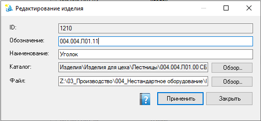

Документ
Карточка записи реестра документов: идентификатор, обозначение, наименование, виртуальный каталог и путь к файлу. Ключ учёта — полный путь к файлу.
Как открыть
В реестре документов — Добавить или Редактировать запись списка (доступно администратору).

Карточка записи: ID, обозначение, наименование, каталог и файл с кнопками «Обзор…»; внизу Применить / Закрыть.
Поля и кнопки
| Элемент | Назначение |
|---|---|
| ID | Внутренний идентификатор записи (при создании может назначаться автоматически). |
| Обозначение | Шифр/номер для поиска в списке и фильтрах. Вместе с расширением файла образует ключ уникальности: обозначение с одним и тем же расширением не может занимать две записи (например, 022.1003 + .sldprt — только один раз; то же обозначение с .slddrw — уже другой ключ). Пустое обозначение в проверке не участвует. |
| Наименование | Текстовое имя документа. Для детали/сборки заполняется командой «Обновить свойства» из SOLIDWORKS; для чертежа, DXF и PDF копируется с одноименной детали/сборки. |
| Каталог + Обзор… | Виртуальный узел дерева реестра. «Обзор…» открывает выбор каталога. |
| Файл + Обзор… | Полный путь к файлу. Уникален в реестре: один путь — одна запись. От него зависит статус пути (ok / NO / ?). |
| Применить | Сохранить карточку в хранилище реестра. |
| Закрыть | Закрыть окно (без «Применить» изменения не записываются). |
После смены пути файла имеет смысл выполнить «Проверку путей» в основном окне реестра документов. Состав изделия смотрите в реестре изделия, а не размножением записей в каталоге документов.
При «Применить» карточка проверяет оба ключа: путь файла (одна запись на файл) и
обозначение с расширением файла (один ключ — одна запись). При конфликте появится
предупреждение с Id и путём конфликтующей записи — измените обозначение или файл.
Исторические дубли, появившиеся до введения правила, сохраняются в реестре и
отображаются в проблемах реестра
как «Дублирование обозначения».